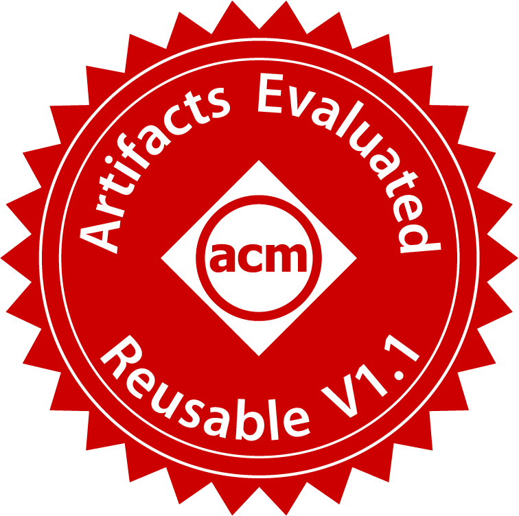
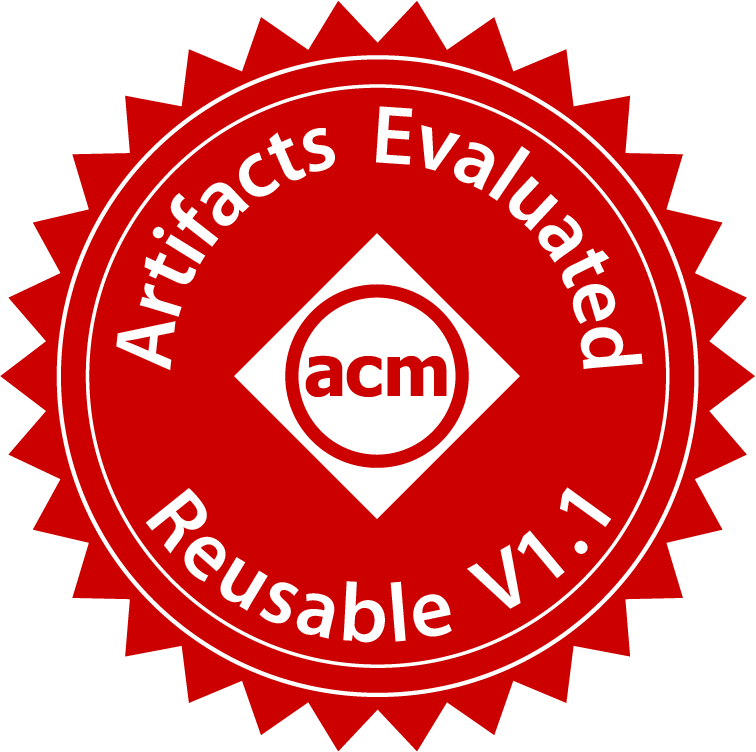
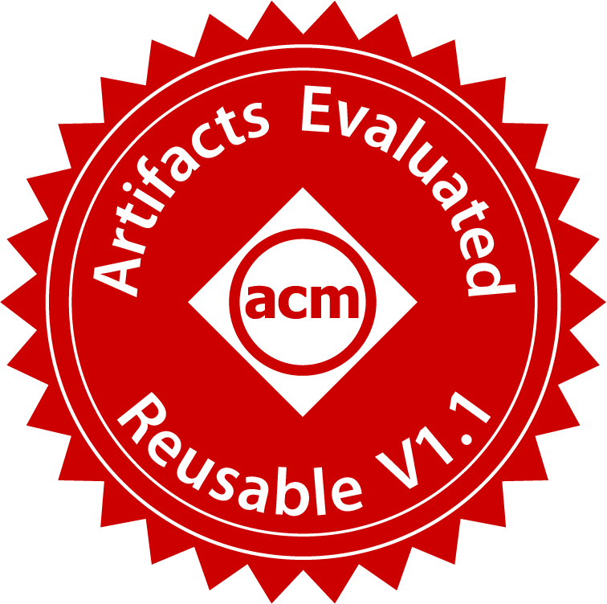
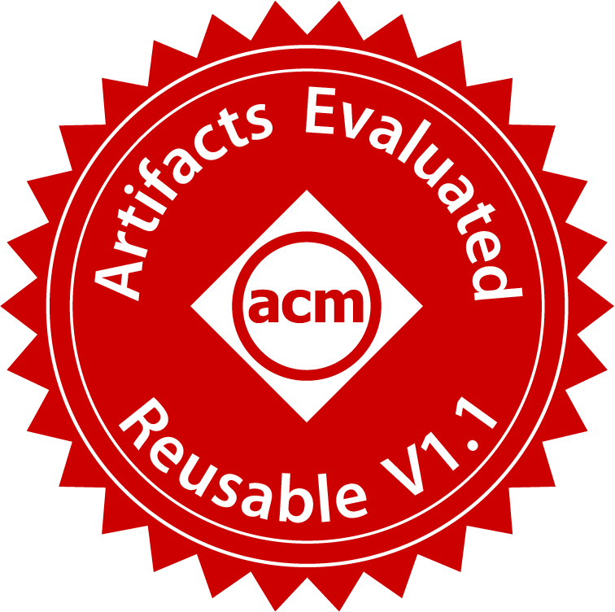

Radarize: Enhancing Radar SLAM with
Generalizable Doppler-Based Odometry
 

 

TL;DR: Doppler flow works in generic environments and has low drift, enabling mapping large indoor environments with small radars on diverse platforms.
Millimeter-wave (mmWave) radar is increasingly being considered as an alternative to optical sensors for robotic primitives like simultaneous localization and mapping (SLAM). While mmWave radar overcomes some limitations of optical sensors, such as occlusions, poor lighting conditions, and privacy concerns, it also faces unique challenges, such as missed obstacles due to specular reflections or fake objects due to multipath. To address these challenges, we propose Radarize, a self-contained SLAM pipeline that uses only a commodity single-chip mmWave radar. Our radar-native approach uses techniques such as Doppler shift-based odometry and multipath artifact suppression to improve performance. We evaluate our method on a large dataset of 146 trajectories spanning 4 buildings and mounted on 3 different platforms, totaling approximately 4.7 Km of travel distance. Our results show that our method outperforms state-of-the-art radar and radar-inertial approaches by approximately 5x in terms of odometry and 8x in terms of end-to-end SLAM, as measured by absolute trajectory error (ATE), without the need for additional sensors such as IMUs or wheel encoders.
|
Emerson Sie, Zikun Liu, Deepak Vasisht MobiCom 2023 PDF | Project Page |
@inproceedings{sie2024radarize,
author = {Sie, Emerson and Wu, Xinyu and Guo, Heyu and Vasisht, Deepak},
title = {Radarize: Enhancing Radar SLAM with Generalizable Doppler-Based Odometry},
booktitle = {The 22nd ACM International Conference on Mobile Systems, Applications, and Services (ACM MobiSys '24)}
year = {2024},
doi = {10.1145/3643832.3661871},
}